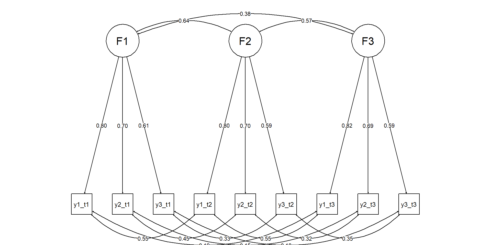
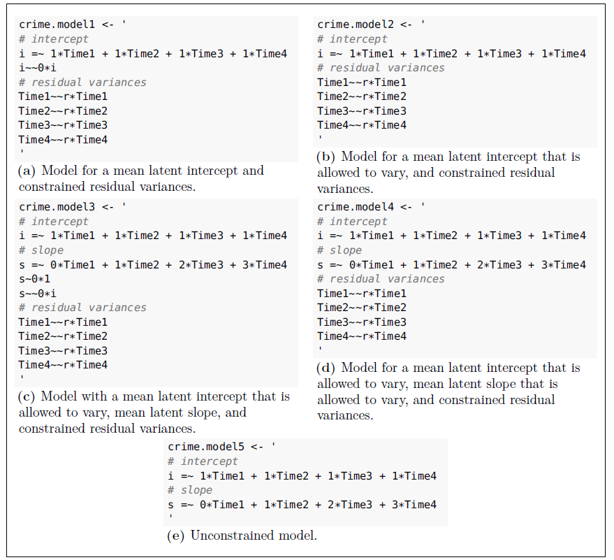

library(lavaan)
library(semTools)
library(dplyr)
set.seed(12345)Longitudinal SEM: Growth + Invariance Over Time
Latent Growth Models & Measurement Invariance Across Waves
Tommaso Feraco
Today in the workflow
Specify → Identify → Estimate → Evaluate → Revise/Report
Today: measurement in a longitudinal fashion.
Growth: measuring and testing change in latent variables.
Learning objectives
By the end of today you can:
- Fit and justify measurement invariance over time (longitudinal CFA).
- Specify and estimate latent growth curve models (LGM) in SEM form.
- Interpret growth parameters (means, variances, covariances) and understand time coding.
- Use global + local diagnostics to decide on disciplined respecification.
What question are we asking?
Longitudinal SEM is not one model, but a family of models.
Tip
Choose the model family from the scientific question:
- Growth (LGM): “How do people change on average? How do trajectories differ?”
- Stability / lagged prediction (CLPM/RI-CLPM): “Do individual changes predict later changes?”
- Change processes (LCS): “How is change from t→t+1 driven/coupled?”
Today: Invariance over time + LGM (growth).
RI-CLPM and LCS are linked as extras later.
Minimal key concept: measurement-first (two-step)
Two-step mindset
- Measurement model: is the construct measured comparably across waves?
- Structural/growth model: only then interpret change parameters.
If measurement shifts over time, “growth” can become a mixture of:
- true change in the latent construct
- changes in item functioning / scaling / intercepts
Longitudinal invariance
Longitudinal invariance ladder
Measurement waves are our “groups” for the MG-CFA.
- Configural: same factor structure each wave
- Metric: equal loadings (\(Λ\)) across waves
- Scalar: equal intercepts (\(τ\)) across waves
→ necessary for latent mean / growth mean interpretation
Warning
Key point: Without at least (partial) scalar invariance, mean differences over time can be artifacts of shifting intercepts (thresholds for ordinal items).
Identification reminders (longitudinal CFA)
For each wave:
- Fix factor scale (e.g., one loading = 1, or factor variance = 1)
- With multiple waves, keep scaling consistent across time
In longitudinal CFA with means, the usual identification logic extends:
- Intercepts and factor means can’t all be free without constraints
- In lavaan, a standard way is fix factor mean at wave 1 to 0 and estimate others (or use growth factors later)
Diagram: longitudinal CFA
Live coding setup
Example data (transparent simulation)
We simulate:
- One latent trait at each wave
- Strong stability (correlated factors over time)
- Some correlated residuals for the same indicator across waves (realistic)
- Later we impose invariance constraints in fitting
Note
We set meanstructure = TRUE in simulation to generate item intercepts + means consistently with the population model.
pop <- '
# Wave 1 factor
F1 =~ 1*y1_1 + .8*y2_1 + .9*y3_1 + .7*y4_1
# Wave 2 factor
F2 =~ 1*y1_2 + .8*y2_2 + .9*y3_2 + .7*y4_2
# Wave 3 factor
F3 =~ 1*y1_3 + .8*y2_3 + .9*y3_3 + .7*y4_3
# Wave 4 factor
F4 =~ 1*y1_4 + .8*y2_4 + .9*y3_4 + .7*y4_4
# Factor means (0 baseline; increasing means)
F1 ~ 0*1
F2 ~ .2*1
F3 ~ .5*1
F4 ~ .8*1
# Factor variances
F1 ~~ 1*F1
F2 ~~ 1*F2
F3 ~~ 1*F3
F4 ~~ 1*F4
# Stability (correlations)
F1 ~~ .70*F2
F2 ~~ .75*F3
F3 ~~ .80*F4
F1 ~~ .60*F3
F2 ~~ .65*F4
F1 ~~ .55*F4
# Residual variances (items)
y1_1 ~~ .5*y1_1; y2_1 ~~ .6*y2_1; y3_1 ~~ .5*y3_1; y4_1 ~~ .7*y4_1
y1_2 ~~ .5*y1_2; y2_2 ~~ .6*y2_2; y3_2 ~~ .5*y3_2; y4_2 ~~ .7*y4_2
y1_3 ~~ .5*y1_3; y2_3 ~~ .6*y2_3; y3_3 ~~ .5*y3_3; y4_3 ~~ .7*y4_3
y1_4 ~~ .5*y1_4; y2_4 ~~ .6*y2_4; y3_4 ~~ .5*y3_4; y4_4 ~~ .7*y4_4
# Correlated residuals across adjacent waves for same indicator (method/wording carryover)
y1_1 ~~ .25*y1_2
y1_2 ~~ .25*y1_3
y1_3 ~~ .25*y1_4
y2_1 ~~ .20*y2_2
y2_2 ~~ .20*y2_3
y2_3 ~~ .20*y2_4
'
dat <- simulateData(pop, sample.nobs = 6000, meanstructure = TRUE)Step 1: Configural longitudinal CFA
We specify one factor per wave, same indicators each wave.
We also allow conceptually justified correlated residuals (same items).
mod_config <- '
F1 =~ y1_1 + y2_1 + y3_1 + y4_1
F2 =~ y1_2 + y2_2 + y3_2 + y4_2
F3 =~ y1_3 + y2_3 + y3_3 + y4_3
F4 =~ y1_4 + y2_4 + y3_4 + y4_4
# correlated residuals for the same item across adjacent waves
y1_1 ~~ y1_2
y1_2 ~~ y1_3
y1_3 ~~ y1_4
y2_1 ~~ y2_2
y2_2 ~~ y2_3
y2_3 ~~ y2_4
'
fit_config <- cfa(mod_config, data = dat, meanstructure = TRUE)
fitMeasures(fit_config, c("chisq","df","cfi","tli","rmsea","srmr")) chisq df cfi tli rmsea srmr
85.683 92.000 1.000 1.000 0.000 0.007 Step 2: Metric invariance: equal loadings
mod_metric <- '
# equal loadings across timepoints
F1 =~ l1*y1_1 + l2*y2_1 + l3*y3_1 + l4*y4_1
F2 =~ l1*y1_2 + l2*y2_2 + l3*y3_2 + l4*y4_2
F3 =~ l1*y1_3 + l2*y2_3 + l3*y3_3 + l4*y4_3
F4 =~ l1*y1_4 + l2*y2_4 + l3*y3_4 + l4*y4_4
# correlated residuals
y1_1 ~~ y1_2
y1_2 ~~ y1_3
y1_3 ~~ y1_4
y2_1 ~~ y2_2
y2_2 ~~ y2_3
y2_3 ~~ y2_4
'
fit_metric <- cfa(mod_metric, data = dat, meanstructure = TRUE)Step 3: Scalar invariance: equal intercepts too
mod_scalar <- '
# equal loadings across timepoints
F1 =~ l1*y1_1 + l2*y2_1 + l3*y3_1 + l4*y4_1
F2 =~ l1*y1_2 + l2*y2_2 + l3*y3_2 + l4*y4_2
F3 =~ l1*y1_3 + l2*y2_3 + l3*y3_3 + l4*y4_3
F4 =~ l1*y1_4 + l2*y2_4 + l3*y3_4 + l4*y4_4
# equal intercepts across time
y1_1 ~ i1*1; y1_2 ~ i1*1; y1_3 ~ i1*1; y1_4 ~ i1*1
y2_1 ~ i2*1; y2_2 ~ i2*1; y2_3 ~ i2*1; y2_4 ~ i2*1
y3_1 ~ i3*1; y3_2 ~ i3*1; y3_3 ~ i3*1; y3_4 ~ i3*1
y4_1 ~ i4*1; y4_2 ~ i4*1; y4_3 ~ i4*1; y4_4 ~ i4*1
# correlated residuals
y1_1 ~~ y1_2
y1_2 ~~ y1_3
y1_3 ~~ y1_4
y2_1 ~~ y2_2
y2_2 ~~ y2_3
y2_3 ~~ y2_4
# free means
F1 ~ 0*1
F2 ~ m2*1
F3 ~ m3*1
F4 ~ m4*1
'
fit_scalar <- cfa(mod_scalar, data = dat, meanstructure = TRUE)Tip
Freeing means could be essential if there is actual mean change.
Evaluate invariance: fit comparisons
Chi-Squared Difference Test
Df AIC BIC Chisq Chisq diff RMSEA Df diff Pr(>Chisq)
fit_config 92 246326 246728 85.7
fit_metric 101 246315 246657 92.7 7.06 0.00000 9 0.63
fit_scalar 110 246309 246591 105.3 12.57 0.00813 9 0.18data.frame(bind_rows(
config = fitMeasures(fit_config, c("cfi","rmsea","srmr")),
metric = fitMeasures(fit_metric, c("cfi","rmsea","srmr")),
scalar = fitMeasures(fit_scalar, c("cfi","rmsea","srmr")),.id = "model")) model cfi rmsea srmr
1 config 1 0 0.00684
2 metric 1 0 0.00891
3 scalar 1 0 0.00929Tip
Always check where misfit arises (local diagnostics).
Diagnostics: global vs local fit (in invariance)
Global: χ², CFI/TLI, RMSEA (+CI), SRMR
Local:
- standardized residuals
- modification indices (MI)
- inspect which items/waves break invariance
# Local diagnostics example
mi <- modificationIndices(fit_scalar)
mi |> arrange(desc(mi)) |> head(10) lhs op rhs mi epc sepc.lv sepc.all sepc.nox
1 y1_1 ~~ y4_1 7.95 -0.027 -0.027 -0.044 -0.044
2 F2 =~ y1_1 5.27 0.027 0.027 0.022 0.022
3 F3 =~ y1_1 5.03 0.024 0.023 0.019 0.019
4 F2 =~ y4_1 3.95 -0.025 -0.025 -0.023 -0.023
5 F1 =~ y4_4 3.75 0.025 0.025 0.023 0.023
6 y4_3 ~~ y2_4 3.70 0.017 0.017 0.026 0.026
7 F1 =~ y4_3 3.56 -0.024 -0.024 -0.023 -0.023
8 F2 =~ y4_4 3.45 0.024 0.024 0.022 0.022
9 y3_1 ~~ y4_3 3.31 -0.017 -0.017 -0.028 -0.028
10 y4_1 ~~ y2_2 3.17 -0.015 -0.015 -0.023 -0.023Pitfall/callout: “Partial invariance = fishing?”
Warning
Partial invariance is not “cheating” if done transparently:
- free the smallest number of parameters
- justify based on item content / design changes
- report which parameters were freed
- verify conclusions are robust (sensitivity)
A good practice: free one intercept (or loading) at a time guided by theory + MI, then reassess.
From time invariance to growth
Transition: from invariance to growth
If longitudinal (partial) scalar invariance holds, we can interpret latent means over time (like we did for group comparisons in MG-CFA).
Growth models re-express these latent means as a trajectory using growth factors:
- Intercept factor (i): baseline level (at a chosen time point)
- Slope factor (s): rate of change (linear, unless extended)
- Optional: quadratic slope, piecewise slopes…
Transition: from invariance to growth
What questions do you answer with latent growth models?
- What is the average trajectory for all respondents?
- What is their initial value (i.e., mean)?
- Is there any change?
- What’s the form of the change
- Is the average trajectory enough or participants vary in their trajectories?
- random effects of intercepts and slope
- Are random effects explainable? How? Do we need more variables?
Minimal math: LGM as CFA with time scores
For person n at time t:
\[ \eta_{nt} = i_n + \lambda_t s_n + \varepsilon_{nt} \]
- \((i_n)\) and \((s_n)\) are latent variables (random effects)
- \((\lambda_t)\) are fixed time scores (e.g., 0,1,2,3)
- \((\varepsilon_{nt})\) are time-specific residuals
Means and variances:
- \((E(i_n) = \mu_i)\), \((Var(i_n)=\sigma_i^2)\)
- \((E(s_n) = \mu_s)\), \((Var(s_n)=\sigma_s^2)\)
- \((Cov(i_n,s_n)=\sigma_{is})\)
Diagram: growth model (intercept + slope)

Note
This is a linear second-order latent growth curve model
LGM on observed composites
We’ll start with a simple observed repeated measure (think: scale score).
In practice, you often combine:
- longitudinal invariance CFA for measurement
- then growth model on latent factors (“second-order” growth)
Create an observed score per wave from the data we used before:
Warning
(teaching-friendly less publication/SEM-friendly)
Linear growth model in lavaan
In lavaan, growth() is a convenience wrapper that fits an SEM with meanstructure=TRUE by default (needed to estimate growth means). If you use sem()/cfa(), you must set it explicitly.
Warning
This model is already assuming random intercepts and slopes
The growth summary
lavaan 0.6-19 ended normally after 26 iterations
Estimator ML
Optimization method NLMINB
Number of model parameters 12
Number of observations 6000
Model Test User Model:
Test statistic 39.720
Degrees of freedom 2
P-value (Chi-square) 0.000
Model Test Baseline Model:
Test statistic 10572.830
Degrees of freedom 6
P-value 0.000
User Model versus Baseline Model:
Comparative Fit Index (CFI) 0.996
Tucker-Lewis Index (TLI) 0.989
Loglikelihood and Information Criteria:
Loglikelihood user model (H0) -26907.698
Loglikelihood unrestricted model (H1) -26887.838
Akaike (AIC) 53839.396
Bayesian (BIC) 53919.790
Sample-size adjusted Bayesian (SABIC) 53881.658
Root Mean Square Error of Approximation:
RMSEA 0.056
90 Percent confidence interval - lower 0.042
90 Percent confidence interval - upper 0.072
P-value H_0: RMSEA <= 0.050 0.230
P-value H_0: RMSEA >= 0.080 0.006
Standardized Root Mean Square Residual:
SRMR 0.014
Parameter Estimates:
Standard errors Standard
Information Expected
Information saturated (h1) model Structured
Latent Variables:
Estimate Std.Err z-value P(>|z|) Std.lv Std.all
i =~
y_t1 1.000 0.691 0.742
y_t2 1.000 0.691 0.741
y_t3 1.000 0.691 0.750
y_t4 1.000 0.691 0.756
s =~
y_t1 0.000 0.000 0.000
y_t2 1.000 0.175 0.187
y_t3 2.000 0.350 0.379
y_t4 3.000 0.524 0.574
Covariances:
Estimate Std.Err z-value P(>|z|) Std.lv Std.all
.y_t1 ~~
.y_t2 0.084 0.014 5.812 0.000 0.084 0.208
.y_t2 ~~
.y_t3 0.102 0.007 15.354 0.000 0.102 0.262
.y_t3 ~~
.y_t4 0.065 0.015 4.253 0.000 0.065 0.218
i ~~
s -0.028 0.009 -3.213 0.001 -0.228 -0.228
Intercepts:
Estimate Std.Err z-value P(>|z|) Std.lv Std.all
i -0.017 0.012 -1.473 0.141 -0.025 -0.025
s 0.230 0.004 56.514 0.000 1.317 1.317
Variances:
Estimate Std.Err z-value P(>|z|) Std.lv Std.all
.y_t1 0.390 0.024 16.180 0.000 0.390 0.449
.y_t2 0.418 0.014 29.997 0.000 0.418 0.480
.y_t3 0.359 0.014 26.593 0.000 0.359 0.423
.y_t4 0.248 0.025 9.774 0.000 0.248 0.297
i 0.478 0.025 19.414 0.000 1.000 1.000
s 0.031 0.005 6.415 0.000 1.000 1.000Interpreting the growth output
Key parameters:
- Mean(i) = average baseline (at time score 0)
- Mean(s) = average change per time unit
- Var(i) = between-person differences in baseline
- Var(s) = between-person differences in change (heterogeneity)
- Cov(i,s) = association between intercept and slope (often negative due to artifacts: regression-to-mean, boundaries, heteroskedasticity - interpret carefully)
lhs op rhs est se z pvalue ci.lower ci.upper
1 i ~~ i 0.478 0.025 19.41 0.000 0.429 0.526
2 s ~~ s 0.031 0.005 6.42 0.000 0.021 0.040
3 i ~~ s -0.028 0.009 -3.21 0.001 -0.044 -0.011
4 i ~1 -0.017 0.012 -1.47 0.141 -0.040 0.006
5 s ~1 0.230 0.004 56.51 0.000 0.222 0.238Pitfall/callout: time coding is a modeling choice
Warning
Changing time scores changes interpretation.
If you code slope loadings as 0,1,2,3 then:
- intercept = expected value at wave 1
If you code as -1,0,1,2 then: - intercept = expected value at wave 2
If you center at the midpoint, intercept becomes “midpoint status.”
Remember to choose a centering that matches the substantive interpretation you want.
Warning
TIME POINTS MUST BE CHOSEN A PRIORI, BASED ON THEORY.
e.g. Is this time point large enough to see change?
A stepwise approach to LGM

LGM extensions
The second-order factor model
The measurement block
lgm_linear_2ndorder <- '
## 1) MEASUREMENT (strong/scalar invariance)
# equal loadings across time (metric invariance)
F1 =~ 1*y1_1 + l2*y2_1 + l3*y3_1 + l4*y4_1
F2 =~ 1*y1_2 + l2*y2_2 + l3*y3_2 + l4*y4_2
F3 =~ 1*y1_3 + l2*y2_3 + l3*y3_3 + l4*y4_3
F4 =~ 1*y1_4 + l2*y2_4 + l3*y3_4 + l4*y4_4
# equal intercepts across time (scalar invariance)
y1_1 ~ i1*1; y1_2 ~ i1*1; y1_3 ~ i1*1; y1_4 ~ i1*1
y2_1 ~ i2*1; y2_2 ~ i2*1; y2_3 ~ i2*1; y2_4 ~ i2*1
y3_1 ~ i3*1; y3_2 ~ i3*1; y3_3 ~ i3*1; y3_4 ~ i3*1
y4_1 ~ i4*1; y4_2 ~ i4*1; y4_3 ~ i4*1; y4_4 ~ i4*1
# (optional) correlated residuals across waves
y1_1 ~~ r1*y1_2
y1_2 ~~ r1*y1_3
y1_3 ~~ r1*y1_4
y2_1 ~~ r2*y2_2
y2_2 ~~ r2*y2_3
y2_3 ~~ r2*y2_4
y3_1 ~~ r3*y3_2
y3_2 ~~ r3*y3_3
y3_3 ~~ r3*y3_4
y4_1 ~~ r4*y4_2
y4_2 ~~ r4*y4_3
y4_3 ~~ r4*y4_4
'The latent change block
lgm_linear_2ndorder <- '
## 2) SECOND-ORDER GROWTH ON LATENT FACTORS
# growth factors (second-order)
i =~ 1*F1 + 1*F2 + 1*F3 + 1*F4
s =~ 0*F1 + 1*F2 + 2*F3 + 3*F4
# estimate growth means (trajectory in the latent metric)
i ~ 1
s ~ 1
# fix means of the first-order factors so i/s carry the mean structure
F1 ~ 0*1
F2 ~ 0*1
F3 ~ 0*1
F4 ~ 0*1
# (optional) allow i-s covariance
i ~~ s
# (optional) residual autocorrelation among the time-specific factors
F1 ~~ F2
F2 ~~ F3
F3 ~~ F4
'
fit_lgm_2nd <- sem(lgm_linear_2ndorder, data = dat, meanstructure = TRUE)Warning
We are not using growth() here but sem + meanstructure=TRUE
Quadratic growth example (simulation)
set.seed(123)
## ----------------------------
## 1) Population model: quadratic growth on observed variables
## ----------------------------
pop_quad <- '
# Growth factors (no first-order measurement factors; y_t* are the repeated measures)
i =~ 1*y_t1 + 1*y_t2 + 1*y_t3 + 1*y_t4
s =~ 0*y_t1 + 1*y_t2 + 2*y_t3 + 3*y_t4
q =~ 0*y_t1 + 1*y_t2 + 4*y_t3 + 9*y_t4
# Factor means (imply the mean trajectory)
i ~ 0*1
s ~ 0.40*1
q ~ 0.15*1
# Factor (co)variances (individual differences)
i ~~ 1.00*i
s ~~ 0.40*s
q ~~ 0.10*q
i ~~ 0.30*s
i ~~ 0.10*q
s ~~ 0.05*q
# Fix observed intercepts so means come from i,s,q
y_t1 ~ 0*1
y_t2 ~ 0*1
y_t3 ~ 0*1
y_t4 ~ 0*1
# Residual variances
y_t1 ~~ 0.64*y_t1
y_t2 ~~ 0.64*y_t2
y_t3 ~~ 0.64*y_t3
y_t4 ~~ 0.64*y_t4
# Adjacent residual autocorrelation (covariances)
y_t1 ~~ 0.192*y_t2
y_t2 ~~ 0.192*y_t3
y_t3 ~~ 0.192*y_t4
'
dat <- simulateData(pop_quad, sample.nobs = 6000, meanstructure = TRUE)Quadratic results
## ----------------------------
## 2) FIT LGM without quadratic
## ----------------------------
lgm_lin <- '
i =~ 1*y_t1 + 1*y_t2 + 1*y_t3 + 1*y_t4
s =~ 0*y_t1 + 1*y_t2 + 2*y_t3 + 3*y_t4
'
fit_lin <- growth(lgm_lin, data = dat)
fitMeasures(fit_lin, c("cfi","tli","rmsea","srmr","aic","bic")) cfi tli rmsea srmr aic bic
0.929 0.915 0.242 0.106 84653.539 84713.835 ## ----------------------------
## 3) FIT LGM with quadratic
## ----------------------------
lgm_quad <- '
i =~ 1*y_t1 + 1*y_t2 + 1*y_t3 + 1*y_t4
s =~ 0*y_t1 + 1*y_t2 + 2*y_t3 + 3*y_t4
q =~ 0*y_t1 + 1*y_t2 + 4*y_t3 + 9*y_t4
'
fit_quad <- growth(lgm_quad, data = dat)
fitMeasures(fit_quad, c("cfi","tli","rmsea","srmr","aic","bic")) cfi tli rmsea srmr aic bic
1.000 1.000 0.008 0.001 82904.604 82991.697
Chi-Squared Difference Test
Df AIC BIC Chisq Chisq diff RMSEA Df diff Pr(>Chisq)
fit_quad 1 82905 82992 1.42
fit_lin 5 84654 84714 1758.36 1757 0.27 4 <0.0000000000000002
fit_quad
fit_lin ***
---
Signif. codes: 0 '***' 0.001 '**' 0.01 '*' 0.05 '.' 0.1 ' ' 1Conditional growth: predictors of i and s
Add a time-invariant covariate x predicting baseline and growth.
Summary of the conditional model
lavaan 0.6-19 ended normally after 41 iterations
Estimator ML
Optimization method NLMINB
Number of model parameters 14
Number of observations 6000
Model Test User Model:
Test statistic 502.347
Degrees of freedom 4
P-value (Chi-square) 0.000
Model Test Baseline Model:
Test statistic 24670.853
Degrees of freedom 10
P-value 0.000
User Model versus Baseline Model:
Comparative Fit Index (CFI) 0.980
Tucker-Lewis Index (TLI) 0.949
Loglikelihood and Information Criteria:
Loglikelihood user model (H0) -41685.211
Loglikelihood unrestricted model (H1) -41434.038
Akaike (AIC) 83398.422
Bayesian (BIC) 83492.216
Sample-size adjusted Bayesian (SABIC) 83447.727
Root Mean Square Error of Approximation:
RMSEA 0.144
90 Percent confidence interval - lower 0.134
90 Percent confidence interval - upper 0.155
P-value H_0: RMSEA <= 0.050 0.000
P-value H_0: RMSEA >= 0.080 1.000
Standardized Root Mean Square Residual:
SRMR 0.052
Parameter Estimates:
Standard errors Standard
Information Expected
Information saturated (h1) model Structured
Latent Variables:
Estimate Std.Err z-value P(>|z|) Std.lv Std.all
i =~
y_t1 1.000 0.542 0.420
y_t2 1.000 0.542 0.315
y_t3 1.000 0.542 0.197
y_t4 1.000 0.542 0.121
s =~
y_t1 0.000 0.000 0.000
y_t2 1.000 0.832 0.483
y_t3 2.000 1.664 0.605
y_t4 3.000 2.496 0.557
Regressions:
Estimate Std.Err z-value P(>|z|) Std.lv Std.all
i ~
x -0.012 0.016 -0.775 0.438 -0.022 -0.022
s ~
x 0.030 0.014 2.138 0.033 0.036 0.036
Covariances:
Estimate Std.Err z-value P(>|z|) Std.lv Std.all
.y_t1 ~~
.y_t2 0.416 0.028 14.784 0.000 0.416 0.688
.y_t2 ~~
.y_t3 -0.248 0.020 -12.374 0.000 -0.248 -0.465
.y_t3 ~~
.y_t4 2.814 0.104 27.025 0.000 2.814 0.935
.i ~~
.s 0.857 0.037 22.944 0.000 1.900 1.900
Intercepts:
Estimate Std.Err z-value P(>|z|) Std.lv Std.all
.i -0.141 0.016 -9.050 0.000 -0.259 -0.259
.s 0.630 0.014 44.449 0.000 0.757 0.757
Variances:
Estimate Std.Err z-value P(>|z|) Std.lv Std.all
.y_t1 1.373 0.058 23.604 0.000 1.373 0.823
.y_t2 0.266 0.027 9.840 0.000 0.266 0.090
.y_t3 1.073 0.065 16.476 0.000 1.073 0.142
.y_t4 8.445 0.223 37.805 0.000 8.445 0.420
.i 0.294 0.053 5.575 0.000 1.000 1.000
.s 0.692 0.028 24.380 0.000 0.999 0.999Warning
As for \(i\) ~~ \(s\) correlations, when an external variable is associated with the intercept, it will probably be associated with the slope, but this is often an artifact. A second-order model could help resolving this issue and avoid issues due to bounds in measures.
Local diagnostics for growth models
Global fit is necessary but not sufficient.
- residual autocorrelation (y_t2 ~~ y_t3, etc.)
- MIs suggesting additional residual correlations
- implausible negative variances (Heywood)
- standardized residuals / fitted vs observed means
lhs op rhs mi epc sepc.lv sepc.all sepc.nox
1 i =~ y_t4 1.42 4.525 5.596 1.267 1.267
2 i =~ y_t3 1.42 -1.508 -1.865 -0.682 -0.682
3 i =~ y_t2 1.42 1.508 1.865 1.084 1.084
4 s =~ y_t1 1.42 0.099 0.108 0.084 0.084
5 y_t2 ~1 1.42 -0.014 -0.014 -0.008 -0.008
6 s =~ y_t2 1.42 -0.033 -0.036 -0.021 -0.021
7 y_t1 ~1 1.42 0.041 0.041 0.032 0.032
8 q =~ y_t4 1.42 -0.281 -0.121 -0.027 -0.027
9 q =~ y_t1 1.42 0.281 0.121 0.094 0.094
10 y_t3 ~1 1.42 0.014 0.014 0.005 0.005What we did NOT do (on purpose)
RI-CLPM and LCS families (they answer different questions)
→ RI-CLPM warnings & alternatives:
slides/opt05_riclpm_warning-and-alternatives.qmd(and/orextras/ex06_riclpm_vs_clpm.qmd) → Latent change score models:extras/ex07_latent-change-score_models.qmd
Exercises → Lab09 (explicit links)
In Lab09 (longitudinal growth) you will:
- Longitudinal invariance ladder
- Fit configural → metric → scalar
- Decide if partial scalar is needed (and document what you free)
- Fit linear LGM (time scores 0,1,2,3)
- Interpret mean/variance of intercept and slope
- Re-center time to change intercept meaning
- Add curvature or residual autocorrelation
- Compare fit + interpretability (don’t respecify blindly)
- Conditional growth
- Add a predictor of intercept and slope; interpret effects
Take-home summary: 3 things
- Measurement invariance over time is the entry ticket to interpreting mean change.
- Growth models are SEMs with time-coded loadings: interpretation depends on time coding/centering.
- Diagnostics matter: combine global fit with local checks; respecify with theory and transparency.
References
(Generated from refs/references.bib using APA 7 CSL.)